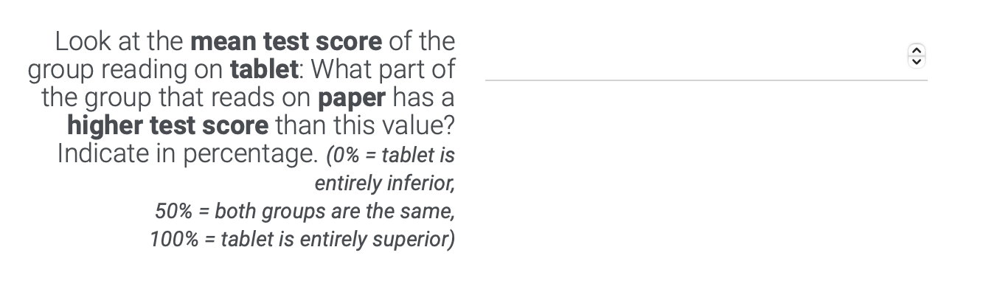

User-friendly
science communication
Communicating inferential uncertainty and effect sizes to laypeople
Institut für Schul- und Unterrichtsentwicklung
Mittwoch, den 19. Juni, 2024
Kommunikation von Effektstärken
- Effektstärken informieren über die Größe z.B. eines Unterschieds oder Zusammenhangs
- ergänzendes oder alternatives Maß zu statistischer Signifikanz und p Werten, um zahlreichen empirisch belegten Fehlkonzepten bezüglich statistischer Signifikanz und p Werten (Haller & Krauss, 2002; Kühberger et al., 2015; Sotos et al., 2009) entgegenzuwirken (Coe, 2002; Cumming, 2014; Kelley & Preacher, 2012)
- Grundlage, um die praktische Relevanz wissenschaftlicher Ergebnisse abzuleiten (Baird & Pane, 2019; Kelley & Preacher, 2012; Kraft, 2020)
- textliche und visuelle Aufbereitung von Effektstärken möglich:

Design und Materialien

Ergebnisse: Informativität

Ergebnisse: Verständnis

Studien 1 - 3

Studien 1 - 3

Design
4x4x16x2 between-between-within-within Design
- 1 Between-Faktor: Experimentalbedingung
- Kontrollgruppe
- Benchmark
- Signaling U3
- Signaling Overlap)
- 2 Between-Faktor:
- Lesen auf Papier vs. Tablet

- Lernen anhand eines Live-Vortrags vs. Videos
- Lernen mittels Experimentieren vs. Computersimulation
- Lernen mittels Erklärvideo mit Untertitel vs. Erklärvideo ohne Untertitel
- Lesen auf Papier vs. Tablet
- 3 Within-Faktor: präsentierte Effektstärke d ∈ {−.80; −.65; −.50; −.35; −.20; .20; .35; .50; .65; .80}
- 4 Within-Faktor: Visualisierungsart
- halfeye plots mit Gruppen auf der x-Achse
- halfeye plots mit Gruppen auf der y-Achse

Abhängige Variablen
- Wahrgenommene Informativität

- Verständnis
- abstrakte Metrik

- Cohen’s U3 Metrik

- abstrakte Metrik
- Cohen’s U3 Fehlkonzept: Personen, die im Median keine plausiblen Cohen’s U3 Ratings angeben (U3 Rating < 21.2% kleinster plausibler Wert, der d = −.8 entspricht)


{kind=link}
{kind=link}
Ergebnisse: Informativität

Ergebnisse: Verständnis

Ergebnisse: Verständnis

Literatur

APA Presidential Task Force on Evidence-Based Practice. (2006). Evidence-Based Practice in Psychology. The American Psychologist, 61(4), 271–285. https://doi.org/10.1037/0003-066X.61.4.271
Backfisch, I., Schneider, J., & Lachner, A. (2021). Gamification. Bibliothek Aufbereiteter Forschungssynthesen Tübingen (TüDi-BASE) [Gamification: Library of prepared research syntheses Tübingen].
Baird, M. D., & Pane, J. F. (2019). Translating standardized effects of education programs into more interpretable metrics. Educational Researcher, 48(4), 217–228. https://doi.org/10.3102/0013189X19848729
Bauer, J., & Kollar, I. (2023). (Wie) kann die Nutzung bildungswissenschaftlicher Evidenz Lehren und Lernen verbessern? Thesen und Fragen zur Diskussion um evidenzorientiertes Denken und Handeln von Lehrkräften [(How) can educational research evidence contribute to improving teaching and learning? Theses and questions on the discussion around teachers’ evidence-oriented reasoning and action]. Unterrichtswissenschaft, 51, 123--147. https://doi.org/10.1007/s42010-023-00166-1
Coe, R. (2002, September). It’s the effect size, stupid. What effect size is and why it is important . British Educational Research Association Annual Conference.
Cumming, G. (2014). The new statistics: Why and how. Psychological Science, 25(1), 7–29. https://doi.org/10.1177/0956797613504966
Ferguson, L. (2021). Evidence-informed teaching and practice-informed research [Special section]. Zeitschrift für Pädagogische Psychologie, 35(2–3), 199–208. https://doi.org/10.1024/1010-0652/a000310
Haller, H., & Krauss, S. (2002). Misinterpretations of significance: A problem students share with their teachers? Methods of Psychological Research Online, 7(1), 1–20.
Hanel, P. H. P., Maio, G. R., & Manstead, A. S. R. (2019). A new way to look at the data: Similarities between groups of people are large and important. Journal of Personality and Social Psychology, 116(4), 541–562. https://doi.org/10.1037/pspi0000154
Hanel, P. H. P., & Mehler, D. M. (2019). Beyond reporting statistical significance: Identifying informative effect sizes to improve scientific communication. Public Understanding of Science, 28(4), 468–485. https://doi.org/10.1177/0963662519834193
Higgins, S., Katsipataki, M., Villanueva Aguilera, A. B., Dobson, E., Gascoine, L., Rajab, T., Reardon, J., Stafford, J., & Uwimpuhwe, G. (2022). The Teaching and Learning Toolkit: Communicating research evidence to inform decision-making for policy and practice in education. Review of Education, 10(1), Article e3327. https://doi.org/10.1002/rev3.3327
Kale, A., Kay, M., & Hullman, J. (2021). Visual reasoning strategies for effect size judgments and decisions. IEEE Transactions on Visualization and Computer Graphics, 27(2), 272–282. https://doi.org/10.1109/TVCG.2020.3030335
Kelley, K., & Preacher, K. J. (2012). On effect size. Psychological Methods, 17(2), 137–152. https://doi.org/10.1037/a0028086
Kerwer, M., Chasiotis, A., Stricker, J., Günther, A., & Rosman, T. (2021). Straight from the Scientist’s Mouth—Plain Language Summaries Promote Laypeople’s Comprehension and Knowledge Acquisition When Reading about Individual Research Findings in Psychology. Collabra: Psychology, 7(1). https://doi.org/10.1525/collabra.18898
Kim, Y.-S., Hofman, J. M., & Goldstein, D. G. (2022). Putting scientific results in perspective: Improving the communication of standardized effect sizes. In CHI 22: Proceedings of the 2022 CHI Conference on Human Factors in Computing Systems. Association for Computing Machinery. https://doi.org/10.1145/3491102.3502053
Kraft, M. A. (2020). Interpreting effect sizes of education interventions. Educational Researcher, 49(4), 241–253. https://doi.org/10.3102/0013189X20912798
Kühberger, A., Fritz, A., Lermer, E., & Scherndl, T. (2015). The significance fallacy in inferential statistics. BMC Research Notes, 8(1), 84. https://doi.org/10.1186/s13104-015-1020-4
Lortie-Forgues, H., Sio, U. N., & Inglis, M. (2021). How should educational effects be communicated to teachers? Educational Researcher, 50(6), 345–354. https://doi.org/10.3102/0013189X20987856
Merk, S., Groß Ophoff, J., & Kelava, A. (2023). Rich data, poor information? Teachers’ perceptions of mean differences in graphical feedback from statewide tests. Learning and Instruction, 84, Article 101717. https://doi.org/10.1016/j.learninstruc.2022.101717
Nelson, J., & Campbell, C. (2017). Evidence-Informed practice in education: Meanings and applications. Educational Research, 59(2), 127–135. https://doi.org/10.1080/00131881.2017.1314115
Sackett, D. L., Rosenberg, W. M., Gray, J. A., Haynes, R. B., & Richardson, W. S. (1996). Evidence based medicine: What it is and what it isn’t. BMJ, 312(7023), 71–72. https://doi.org/10.1136/bmj.312.7023.71
Shavelson, R., Fu, A., Kurpius, A., & Wiley, E. (2021). Evidence-based practice in science education. In R. Gunstone (Hrsg.), Encyclopedia of science education. Springer Netherlands. https://doi.org/10.1007/978-94-007-6165-0_158-1
Sotos, A. E. C., Vanhoof, S., Van den Noortgate, W., & Onghena, P. (2009). How confident are students in their misconceptions about hypothesis tests? Journal of Statistics Education, 17(2). https://doi.org/10.1080/10691898.2009.11889514
Wadhwa, M., Zheng, J., & Cook, T. D. (2024). How consistent are meanings of „evidence-based“? A comparative review of 12 clearinghouses That rate the effectiveness of educational programs. Review of Educational Research, 94(1), 3–32. https://doi.org/10.3102/00346543231152262
Wiesbeck, A. B., Knogler, M., & CHU Research Group. (2018). Gestaltung von Lernmaterial: Wie Hervorhebungen den Lernerfolg beeinflussen [Designing learning material: How signaling influences learning success]. Kurzreview 22. https://www.clearinghouse.edu.tum.de/reviews/lehrstrategien-im-vergleich/gestaltung-von-lernmaterial-wie-hervorhebungen-den-lernerfolg-beeinflussen/